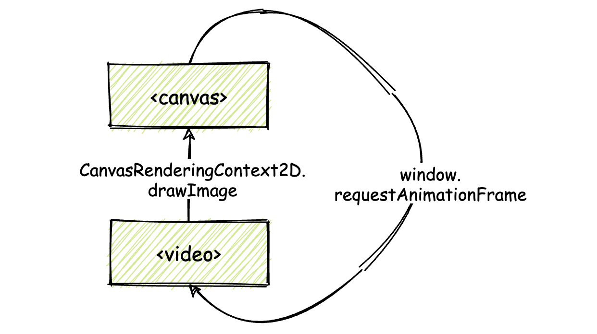
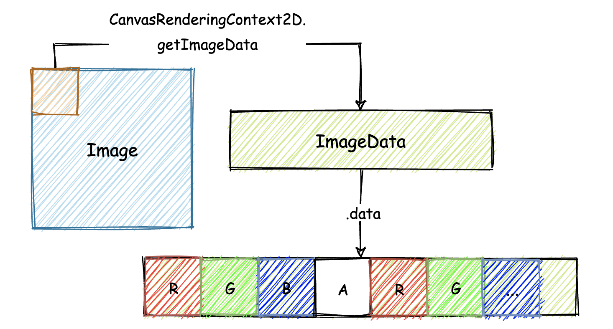
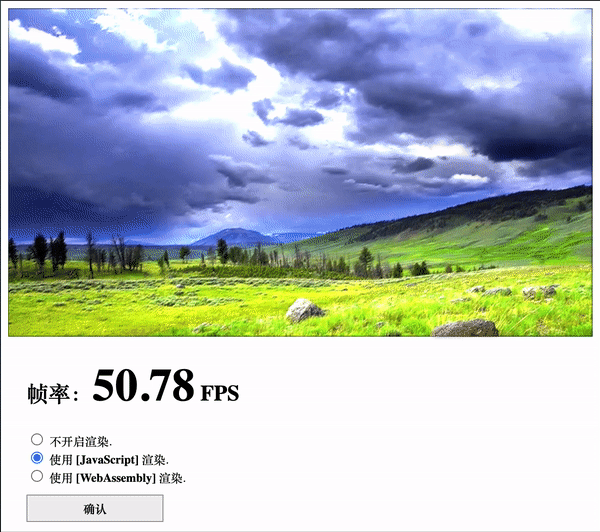

- 00 开篇词 我们为什么要了解 WebAssembly？.md.html
- 01 基础篇：学习此课程你需要了解哪些基础知识？.md.html
- 02 历史篇：为什么会有 WebAssembly 这样一门技术？.md.html
- 03 WebAssembly 是一门新的编程语言吗？.md.html
- 04 WebAssembly 模块的基本组成结构到底有多简单？.md.html
- 05 二进制编码：WebAssembly 微观世界的基本数据规则是什么？.md.html
- 06 WAT：如何让一个 WebAssembly 二进制模块的内容易于解读？.md.html
- 07 WASI：你听说过 WebAssembly 操作系统接口吗？.md.html
- 08 API：在 WebAssembly MVP 标准下你能做到哪些事？.md.html
- 09 WebAssembly 能够为 Web 前端框架赋能吗？.md.html
- 10 有哪些已经投入生产的 WebAssembly 真实案例？.md.html
- 11 WebAssembly 在物联网、多媒体与云技术方面有哪些创新实践？.md.html
- 12 有哪些优秀的 WebAssembly 编译器与运行时？.md.html
- 13 LLVM：如何将自定义的语言编译到 WebAssembly？.md.html
- 14 有哪些正在行进中的 WebAssembly Post-MVP 提案？.md.html
- 15 如何实现一个 WebAssembly 在线多媒体处理应用（一）？.md.html
- 16 如何实现一个 WebAssembly 在线多媒体处理应用（二）？.md.html
- 17 如何实现一个 WebAssembly 在线多媒体处理应用（三）？.md.html
- 18 如何进行 Wasm 应用的调试与分析？.md.html
- 19 如何应用 WASI 及其相关生态？.md.html
- 20 总结与答疑.md.html
- 结束语 WebAssembly，未来已来.md.html
- 捐赠
16 如何实现一个 WebAssembly 在线多媒体处理应用（二）？
你好，我是于航。
在上一节课中，我们介绍了本次实践项目在代码层面的大体组成结构，着重给你讲解了需要了解的一些基础性知识，比如“滤镜的基本原理及实现方法”以及“Emscripten 的基本用法”等等。而在这节课中，我们将继续构建这个基于 Wasm 实现的多媒体 Web 应用。
HTML
首先，我们来构建这个 Web 应用所对应的 HTML 部分。这部分代码如下所示：
<!DOCTYPE html>
<html lang="en">
<head>
<meta charset="UTF-8">
<title>DIP-DEMO</title>
<style>
* { font-family: "Arial,sans-serif"; }
.fps-num { font-size: 50px; }
.video { display: none; }
.operation { margin: 20px; }
button {
width: 150px;
height: 30px;
margin-top: 10px;
border: solid 1px #999;
font-size: 13px;
font-weight: bold;
}
.radio-text { font-size: 13px; }
</style>
</head>
<body>
<canvas class="canvas"></canvas>
<div class="operation">
<h2>帧率：<span class="fps-num">NaN</span> FPS</h2>
<input name="options" value="0" type="radio" checked="checked"/>
<span class="radio-text">不开启渲染.</span> <br/>
<input name="options" value="1" type="radio"/>
<span class="radio-text">使用 <b>[JavaScript]</b> 渲染.</span>
<br/>
<input name="options" value="2" type="radio"/>
<span class="radio-text">使用 <b>[WebAssembly]</b> 渲染.</span>
<br/>
<button>确认</button>
</div>
<video class="video" type="video/mp4"
muted="muted"
loop="true"
autoplay="true"
src="media/video.mp4">
</body>
<script src='./dip.js'></script>
</html>
为了便于演示，HTML 代码部分我们尽量从简，并且直接将 CSS 样式内联到 HTML 头部。
其中最为重要的两个部分为 “<canvas>” 标签和 “<video>” 标签。<canvas> 将用于展示对应 <video> 标签所加载外部视频资源的画面数据；而这些帧数据在被渲染到<canvas>之前，将会根据用户的设置，有选择性地被 JavaScript 代码或者 Wasm 模块进行处理。
还有一点需要注意的是，可以看到我们为<video> 标签添加了名为 “muted”、“loop” 以及 “autoplay” 的三个属性。这三个属性分别把这个视频资源设置为“静音播放”、“循环播放”以及“自动播放”。
实际上，根据 Chrome 官方给出的 “Autoplay Policy” 政策，我们并不能够直接依赖其中的 “autoplay” 属性，来让视频在用户打开网页时立即自动播放。稍后你会看到，在应用实际加载时，我们仍会通过调用 <video> 标签所对应的 play() 方法，来确保视频资源可以在网页加载完毕后，直接自动播放。
最后，在 HTML 代码的末尾处，我使用 <script> 标签加载了同目录下名为 “dip.js” 的 JavaScript 文件。在这个文件中，我们将完成该 Web 应用的所有控制逻辑，包括：视频流的控制与显示逻辑、用户与网页的交互逻辑、JavaScript 版滤镜的实现、Wasm 版滤镜实现对应的模块加载、初始化与调用逻辑，以及实时帧率的计算逻辑等。
JavaScript
趁热打铁，我们接着来编写整个 Web 应用组成中，最为重要的 JavaScript 代码部分。
视频流的控制与显示逻辑
第一步，我们要实现的是将 <video> 标签所加载的视频资源，实时渲染到 <canvas> 标签所代表的画布对象上。这一步的具体实现方式，你可以参考下面这张示意图。

其中的核心逻辑是，我们需要通过名为 “CanvasRenderingContext2D.drawImage()” 的 Web API ，来将 <video> 标签所承载视频的当前帧内容，绘制到 <canvas> 上。这里我们使用到的 drawImage() 方法，支持设置多种类型的图像源，<video> 标签所对应的 “HTMLVideoElement” 便是其中的一种。
CanvasRenderingContext2D 接口是 Web API 中， Canvas API 的一部分。通过这个接口，我们能够获得一个，可以在对应 Canvas 上进行 2D 绘图的“渲染上下文”。稍后在代码中你会看到，我们将通过 <canvas> 对象上名为 “getContext” 的方法，来获得这个上下文对象。
我们之前曾提到，drawImage() 方法只能够绘制 <video> 标签对应视频流的“当前帧”内容，因此随着视频的播放，“当前帧”内容也会随之发生改变。
为了能够让绘制到 <canvas> 上的画面可以随着视频的播放来实时更新，这里我们将使用名为 “window.requestAnimationFrame” 的 Web API， 来实时更新绘制在 <canvas> 上的画面内容（如果你对这个 API 不太熟悉，可以点击这里回到“基础课”进行复习）。
下面我们给出这部分功能对应的代码实现：
// 获取相关的 HTML 元素；
let video = document.querySelector('.video');
let canvas = document.querySelector('.canvas');
// 使用 getContext 方法获取 <canvas> 标签对应的一个 CanvasRenderingContext2D 接口；
let context = canvas.getContext('2d');
// 自动播放 <video> 载入的视频；
let promise = video.play();
if (promise !== undefined) {
promise.catch(error => {
console.error("The video can not autoplay!")
});
}
// 定义绘制函数；
function draw() {
// 调用 drawImage 函数绘制图像到 <canvas>；
context.drawImage(video, 0, 0);
// 获得 <canvas> 上当前帧对应画面的像素数组；
pixels = context.getImageData(0, 0, video.videoWidth, video.videoHeight);
// ...
// 更新下一帧画面；
requestAnimationFrame(draw);
}
// <video> 视频资源加载完毕后执行；
video.addEventListener("loadeddata", () => {
// 根据 <video> 载入视频大小调整对应的 <canvas> 尺寸；
canvas.setAttribute('height', video.videoHeight);
canvas.setAttribute('width', video.videoWidth);
// 绘制函数入口；
draw(context);
});
关于代码中每一行的具体功能，你可以参考附加到相应代码行前的注释加以理解。首先，我们需要获得相应的 HTML 元素，这里主要是 <canvas> 和 <video> 这两个标签对应的元素对象，然后我们获取了 <canvas> 标签对应的 2D 绘图上下文。
紧接着，我们处理了 <video> 标签所加载视频自动播放的问题，这里我们直接调用了 <video> 元素的 play 方法。该方法会返回一个 Promise，针对 reject 的情况，我们做出了相应的处理。
然后，我们在 <video> 元素的加载回调完成事件 “loadeddata” 中，根据所加载视频的尺寸相应地调整了 <canvas> 元素的大小，以确保它可以完整地显示出视频的画面内容。同时在这里，我们调用了自定义的 draw 方法，来把视频的首帧内容更新到 <canvas> 画布上。
在 draw 方法中，我们调用了 drawImage 方法来更新 <canvas> 画布的显示内容。该方法在这里接受三个参数，第一个为图像源，也就是 <video> 元素对应的 HTMLVideoElement 对象；第二个为待绘制图像的起点在 <canvas> 上 X 轴的偏移；第三个参数与第二个类似，相应地为在 Y 轴上的偏移。这里对于最后两个参数，我们均设置为 0。
然后，我们使用了名为 “CanvasRenderingContext2D.getImageData()” 的方法（下文简称 “getImageData”）来获得 <canvas> 上当前帧对应画面的像素数组。
getImageData 方法接受四个参数。前两个参数指定想要获取像素的帧画面，在当前帧画面 x 轴和 y 轴上的偏移范围。最后两个参数指定这个范围的长和宽。
四个参数共同指定了画面上的一个矩形位置，在对应该矩形的范围内，所有像素序列将会被返回。我们会在后面来使用和处理这些返回的像素数据。
最后，我们通过 requestAnimationFrame 方法，以 60Hz 的频率来更新 <canvas> 上的画面。
在上述这部分代码实现后，我们的 Web 应用便可在用户打开网页时，直接将 <video> 加载播放的视频，实时地绘制在 <canvas> 对应的画布中。
用户与网页的交互逻辑
接下来，我们继续实现 JavaScript 代码中，与“处理用户交互逻辑”这部分功能有关的代码。
这部分代码比较简单，主要流程就是监听用户做出的更改，然后将这些更改后的值保存起来。这里为了实现简单，我们直接以“全局变量”的方式来保存这些设置项的值。这部分代码如下所示：
// 全局状态；
const STATUS = ['STOP', 'JS', 'WASM'];
// 当前状态；
let globalStatus = 'STOP';
// 监听用户点击事件；
document.querySelector("button").addEventListener('click', () => {
globalStatus = STATUS[
Number(
document.querySelector("input[name='options']:checked").value
)
];
});
这里我们需要维护应用的三种不同状态，即：不使用滤镜（STOP）、使用 JavaScript 实现滤镜（JS）、使用 Wasm 实现滤镜（WASM）。全局变量 globalStatus 维护了当前应用的状态，在后续的代码中，我们也将使用这个变量的值，来调用不同的滤镜实现，或者选择关闭滤镜。
实时帧率的计算逻辑
作为开始真正构建 JavaScript 版滤镜函数前的最后一步，我们先来实现帧率的实时计算逻辑，然后观察在不开启任何滤镜效果时的 <canvas> 渲染帧率情况。
帧率的一个粗糙计算公式如下图所示。对于帧率，我们可以将其简单理解为在 1s 时间内屏幕上画面能够刷新的次数。比如若 1s 时间内画面能够更新 60 次，那我们就可以说它的帧率为 60 赫兹（Hz）。
因此，一个简单的帧率计算逻辑便可以这样来实现：首先，把每一次从对画面像素开始进行处理，直到真正绘制到 <canvas>这整个流程所耗费的时间，以毫秒为单位进行计算；然后用 1000 除以这个数值，即可得到一个估计的，在 1s 时间所内能够渲染的画面次数，也就是帧率。
这部分逻辑的 JavaScript 实现代码如下所示：
function calcFPS (vector) {
// 提取容器中的前 20 个元素来计算平均值；
const AVERAGE_RECORDS_COUNT = 20;
if (vector.length > AVERAGE_RECORDS_COUNT) {
vector.shift(-1); // 维护容器大小；
} else {
return 'NaN';
}
// 计算平均每帧在绘制过程中所消耗的时间；
let averageTime = (vector.reduce((pre, item) => {
return pre + item;
}, 0) / Math.abs(AVERAGE_RECORDS_COUNT));
// 估算出 1s 内能够绘制的帧数；
return (1000 / averageTime).toFixed(2);
}
这里，为了能够让帧率的估算更加准确，我们为 JavaScript 和 Wasm 这两个版本的滤镜实现，分别单独准备了用来保存每帧计算时延的全局数组。这些数组会保存着在最近 20 帧里，每一帧计算渲染时所花费的时间。
然后，在上面代码中的函数 calcFPS 内，我们会通过对这 20 个帧时延记录取平均值，来求得一个更加稳定、相对准确的平均帧时延。最后，使用 1000 来除以这个平均帧时延，你就能够得到一个估算出的，在 1s 时间内能够绘制的帧数，也就是帧率。
上面代码中的语句 vector.shift(-1) 其主要作用是，当保存最近帧时延的全局数组内元素个数超过 20 个时，会移除其中最老的一个元素。这样，我们可以保证整个数组的大小维持在 20 及以内，不会随着应用的运行而产生 OOM（Out-of-memory）的问题。
我们将前面讲解的这些代码稍微整合一下，并添加上对应需要使用到的一些全局变量。然后尝试在浏览器中运行这个 Web 应用。在不开启任何滤镜的情况下，你可得到如下的画面实时渲染帧率（这里我们使用 Chrome 进行测试，不同的浏览器和版本结果会有所差异）。

JavaScript 滤镜方法的实现
接下来，我们将编写整个 Web 应用的核心组成之一 —— JavaScript 滤镜函数。关于这个函数的具体实现步骤，你可以参考在上一节课中介绍的“滤镜基本原理”。
首先，根据规则，我们需要准备一个 3x3 大小的二维数组，来容纳“卷积核”矩阵。然后将该矩阵进行 180 度的翻转。最后得到的结果矩阵，将会在后续直接参与到各个像素点的滤镜计算过程。这部分功能对应的 JavaScript 代码实现如下所示：
// 矩阵翻转函数；
function flipKernel(kernel) {
const h = kernel.length;
const half = Math.floor(h / 2);
// 按中心对称的方式将矩阵中的数字上下、左右进行互换；
for (let i = 0; i < half; ++i) {
for (let j = 0; j < h; ++j) {
let _t = kernel[i][j];
kernel[i][j] = kernel[h - i - 1][h - j - 1];
kernel[h - i - 1][h - j - 1] = _t;
}
}
// 处理矩阵行数为奇数的情况；
if (h & 1) {
// 将中间行左右两侧对称位置的数进行互换；
for (let j = 0; j < half; ++j) {
let _t = kernel[half][j];
kernel[half][j] = kernel[half][h - j - 1];
kernel[half][h - j - 1] = _t;
}
}
return kernel;
}
// 得到经过翻转 180 度后的卷积核矩阵；
const kernel = flipKernel([
[-1, -1, 1],
[-1, 14, -1],
[1, -1, -1]
]);
关于“如何将矩阵数组进行 180 度翻转”的实现细节，你可以参考代码中给出的注释来加以理解。
在一切准备就绪后，我们来编写核心的 JavaScript 滤镜处理函数 jsConvFilter。该处理函数一共接受四个参数。第一个参数是通过 getImageData 方法，从 <canvas> 对象上获取的当前帧画面的像素数组数据。
getImageData 在执行完毕后会返回一个 ImageData 类型的对象，在该对象中有一个名为 data 的属性。data 属性实际上是一个 Uint8ClampedArray 类型的 “Typed Array”，其中便存放着所有像素点按顺序排放的 RGBA 分量值。你可以借助下面这张图来帮助理解上面我们描述的，各个方法与返回值之间的对应关系。

jsConvFilter 处理函数的第二和第三个参数为视频帧画面的宽和高；最后一个参数为所应用滤镜对应的“卷积核”矩阵数组。至此，我们可以构造如下的 JavaScript 版本“滤镜函数”：
function jsConvFilter(data, width, height, kernel) {
const divisor = 4; // 分量调节参数；
const h = kernel.length, w = h; // 保存卷积核数组的宽和高；
const half = Math.floor(h / 2);
// 根据卷积核的大小来忽略对边缘像素的处理；
for (let y = half; y < height - half; ++y) {
for (let x = half; x < width - half; ++x) {
// 每个像素点在像素分量数组中的起始位置；
const px = (y * width + x) * 4;
let r = 0, g = 0, b = 0;
// 与卷积核矩阵数组进行运算；
for (let cy = 0; cy < h; ++cy) {
for (let cx = 0; cx < w; ++cx) {
// 获取卷积核矩阵所覆盖位置的每一个像素的起始偏移位置；
const cpx = ((y + (cy - half)) * width + (x + (cx - half))) * 4;
// 对卷积核中心像素点的 RGB 各分量进行卷积计算(累加)；
r += data[cpx + 0] * kernel[cy][cx];
g += data[cpx + 1] * kernel[cy][cx];
b += data[cpx + 2] * kernel[cy][cx];
}
}
// 处理 RGB 三个分量的卷积结果；
data[px + 0] = ((r / divisor) > 255) ? 255 : ((r / divisor) < 0) ? 0 : r / divisor;
data[px + 1] = ((g / divisor) > 255) ? 255 : ((g / divisor) < 0) ? 0 : g / divisor;
data[px + 2] = ((b / divisor) > 255) ? 255 : ((b / divisor) < 0) ? 0 : b / divisor;
}
}
return data;
}
你可以借助代码中的注释来了解整个卷积过程的实现细节。其中有这样几个点需要注意：
在整个方法的实现过程中，我们使用了名为 divisor 的变量，来控制滤镜对视频帧画面产生的效果强度。divisor 的值越大，滤镜的效果就越弱。
在遍历整个帧画面的像素序列时（最外层的两个循环体），我们将循环控制变量 y 和 x 的初始值，设置为 Math.floor(h / 2)，这样可以直接忽略对帧画面边缘像素的处理，进而也不用考虑图像卷积产生的“边缘效应”。
所谓“边缘效应”，其实就是指当我们在处理帧画面的边缘像素时，由于卷积核其范围内的一部分“单元格”无法找到与之相对应的像素点，导致边缘像素实际上没有经过“完整”的滤镜计算过程，会产生与预期不符的滤镜处理效果。而这里为了简化流程，我们选择了直接忽略对边缘像素的处理过程。
最后，在得到经过卷积累加计算的 RGB 分量值后，我们需要判断对应值是否在 [0, 255] 这个有效区间内。若没有，我们就将这个值，直接置为对应的最大有效值或最小有效值。
现在，我们将前面的所有代码功能加以整合，然后试着在浏览器中再次运行这个 Web 应用。你会看到类似下图的结果。相较于不开启滤镜，使用滤镜后的画面渲染帧率明显下降了。

总结
好了，讲到这，今天的内容也就基本结束了。最后我来给你总结一下。
今天我们主要讲解了本次实践项目中与 JavaScript 代码相关的几个重要功能的实现思路，以及实现细节。
JavaScript 代码作为当前用来构建 Web 应用所必不可少的一个重要组成部分，它负责构建整个应用与用户进行交互的逻辑处理部分。不仅如此，我们还使用 JavaScript 代码实现了一个滤镜处理函数，并用该函数处理了 <canvas> 上的帧画面像素数据，然后再将这些数据重新绘制到 <canvas> 上。
在下一节课里，你将会看到我们实现的 Wasm 滤镜处理函数，与 JavaScript 版滤镜函数在图像处理效率上的差异。
课后练习
最后，我们来做一个练习题吧。
你可以试着更改我们在 JavaScript 滤镜函数中所使用的卷积核矩阵（更改矩阵中元素的值，或者改变矩阵的大小），来看看不同的卷积核矩阵会产生怎样不同的滤镜效果。
今天的课程就结束了，希望可以帮助到你，也希望你在下方的留言区和我参与讨论，同时欢迎你把这节课分享给你的朋友或者同事，一起交流一下。
© 2019 - 2023 Liangliang Lee. Powered by gin and hexo-theme-book.